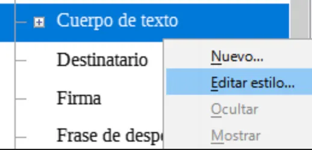
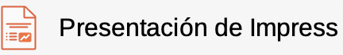
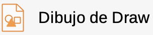
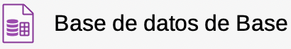
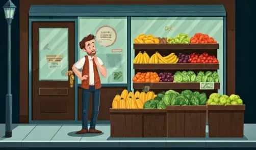

Guía 1011: OFIMÁTICA y Software Libre¶
|
|

Exploración Estructuración Actividad práctica Transferencia
Temática: Ofimática y software libre.
Objetivo de aprendizaje: Conocer el concepto de ofimática y entender que la productividad también se logra con el uso de software libre.
DESEMPEÑO: Comprende qué es la ofimática y reconoce las libertades esenciales del software libre, demostrando el uso básico de las herramientas de LibreOffice para la creación de documentos de texto, hojas de cálculo y presentaciones.
Componente: Tecnología, Informática y Sociedad.
Competencia: Actúo críticamente y de forma argumentada frente a las implicaciones éticas, sociales y ambientales del desarrollo, implementación, uso y disposición final de los productos tecnológicos.
Evidencia de aprendizaje: Juzgo las implicaciones que la protección a la propiedad intelectual tiene sobre el desarrollo y uso de diversas manifestaciones tecnológicas en el mundo.
Actividades desarrolladas en su totalidad.
Participación en clase.
Explicación clara de conceptos.
Argumentación de ideas.
Cumplimiento de las reglas del aula.
Plan de refuerzo 01.pdf Descargar
Mensaje del autor¶
“El estudio del software libre es esencial ya que, como manifestación tecnológica, surge como una alternativa ética y política a los modelos de propiedad intelectual. Esta filosofía no solo garantiza la equidad en el acceso a recursos digitales, sino que permite trascender del saber tecnológico al conocimiento tecnológico profundo. Al permitir el análisis de su funcionamiento interno (posibilidad negada por el software propietario), se faculta al estudiante para adoptar, adaptar y generar soluciones que respondan a necesidades sociales.”
—Camilo Fonseca
OFIMÁTICA¶
Concepto de ofimática
[18] La ofimática es el conjunto de técnicas, aplicaciones y herramientas informáticas que se utilizan para optimizar, automatizar y mejorar los procedimientos o tareas relacionadas con el trabajo de oficina. El término “ofimática” es una combinación de las palabras “oficina” e “informática”.
Las principales áreas que abarca la ofimática incluyen:
Procesamiento de textos (creación y edición de documentos).
Hojas de cálculo (manejo de datos numéricos y fórmulas).
Presentaciones (creación de diapositivas).
Gestión de bases de datos.
Correo electrónico y comunicaciones.
Gestión de calendarios y agendas.
Gestión documental.
La ofimática es fundamental en el entorno laboral moderno, ya que permite aumentar la productividad y eficiencia en las tareas administrativas y de gestión de información.
¿Qué es el software?¶
[1] “El software es un conjunto de programas, instrucciones y reglas informáticas que permiten ejecutar distintas tareas en una computadora. Se trata de las aplicaciones y sistemas que hacen posible que los usuarios puedan trabajar con un ordenador o dispositivo electrónico”.
Tipos de software
[1] El software tiene los siguientes tipos:
Software de sistema: Programas básicos que permiten que el hardware funcione (sistemas operativos, controladores).
Software de aplicación: Programas que realizan tareas específicas para los usuarios (procesadores de texto, navegadores web).
Clasificación de software
[2] El software se puede clasificar de la siguiente manera:
Software libre: Software que puede ser usado con libertad y de forma legal.
Software propietario: Software que puede ser usado con restricciones y de forma legal.
Software pirata: Software que es usado de forma ilegal (independiente si es usado con libertad o restricciones).
Software libre¶
[2] El software libre es un tipo de software que respeta la libertad de los usuarios y la comunidad. Los usuarios tienen la libertad de ejecutar, copiar, distribuir, estudiar, modificar y mejorar el software.
COLABORACIÓN
El software libre promueve la colaboración, la transparencia y el conocimiento compartido, permitiendo que las comunidades de desarrolladores y usuarios trabajen juntos para mejorar el software continuamente.
El software libre se caracteriza por:
Se centra en la libertad como un principio ético y filosófico.
Enfatiza las cuatro libertades fundamentales mencionadas anteriormente.
Impulsado por la Free Software Foundation (FSF).
Usa licencias que garantizan que las versiones modificadas también sean libres (Copyleft).
4 Libertades del software libre
[2] Las cuatro libertades esenciales del software libre son:
(Libertad 0): La libertad de ejecutar el programa como se desee, con cualquier propósito.
(Libertad 1): La libertad de estudiar cómo funciona el programa y cambiarlo para que haga lo que uno quiera. (El acceso al código fuente es una condición necesaria para ello).
(Libertad 2): La libertad de redistribuir copias para ayudar a otros.
(Libertad 3): La libertad de distribuir copias de sus versiones modificadas a terceros.
Estas libertades son esenciales, no opcionales. Un software es libre si otorga a los usuarios todas estas libertades de manera adecuada.
Ejemplos de software libre¶
A continuación se muestran algunos ejemplos del software libre:
Sistema Operativo GNU-LINUX ($0)

Logo GNU/Linux¶ |
[3] GNU/Linux es un sistema operativo libre y de código abierto que combina el núcleo Linux con las herramientas del proyecto GNU.
GNU/Linux incluye las siguientes características:
Gratuito y libre para usar, modificar y distribuir.
Alta seguridad y estabilidad.
Gran variedad de distribuciones para diferentes necesidades (Ubuntu, Fedora, Debian, etc.).
Funciona en diversos dispositivos, desde computadores personales hasta servidores.
El sistema fue creado inicialmente por Linus Torvalds (kernel Linux) en conjunto con el proyecto GNU de Richard Stallman, y hoy es mantenido por una gran comunidad de desarrolladores en todo el mundo.
Navegador web Mozilla FIREFOX ($0)

Logo Navegador Mozilla Firefox¶ |
[4] Mozilla Firefox es un navegador web de código abierto y gratuito que se caracteriza por:
Alta velocidad y rendimiento en la navegación.
Fuerte énfasis en la privacidad y seguridad del usuario.
Personalizable a través de extensiones y temas.
Compatible con los estándares web modernos.
Firefox es desarrollado por Mozilla Foundation, una organización sin fines de lucro que promueve una internet abierta y accesible para todos. El navegador representa una alternativa libre a opciones privativas como Google Chrome.
Editor de imágenes GIMP ($0)

Logo Gimp¶ |
[5] GIMP (GNU Image Manipulation Program) es un editor de imágenes libre y de código abierto que ofrece:
Herramientas profesionales para edición y retoque de imágenes.
Soporte para múltiples formatos de archivo.
Capacidad de trabajar con capas y filtros.
Sistema de plugins para extender funcionalidades.
Es una alternativa gratuita a programas comerciales como Photoshop, siendo especialmente popular en la comunidad Linux aunque también está disponible para Windows y MacOS.
Editor de gráficos vectoriales INKSCAPE ($0)

Logo INKSCAPE¶ |
[6] INKSCAPE es un editor de gráficos vectoriales libre y de código abierto que ofrece:
Creación y edición de gráficos vectoriales profesionales.
Compatible con estándares como SVG (Scalable Vector Graphics).
Herramientas avanzadas de dibujo y manipulación de formas.
Ideal para crear logotipos, ilustraciones y diseños escalables.
Es una alternativa gratuita a programas comerciales como Adobe Illustrator, permitiendo crear gráficos que mantienen su calidad sin importar el tamaño al que se escalen.
Reproductor multimedia VLC ($0)

Logo VLC¶ |
[7] VLC Media Player es un reproductor multimedia libre y de código abierto que se caracteriza por:
Capacidad para reproducir casi cualquier formato de audio y video.
No requiere codecs adicionales para funcionar.
Permite streaming y conversión de archivos multimedia.
Funciona en múltiples sistemas operativos (Windows, Linux, Mac).
Desarrollado por VideoLAN Organization, VLC es uno de los reproductores más populares debido a su versatilidad y facilidad de uso. Es completamente gratuito y se mantiene actualizado por una comunidad activa de desarrolladores.
Suite de creación 3D BLENDER ($0)

Logo BLENDER¶ |
[8] Blender es una suite de creación 3D de código abierto y gratuita que abarca todo el ciclo de producción digital. Permite realizar modelado, renderizado, animación, edición de video, composición y creación de efectos visuales (VFX).
Características principales:
Modelado y Esculpido: Herramientas avanzadas para crear formas complejas y personajes.
Animación y Rigging: Sistema profesional para dar movimiento a objetos y modelos orgánicos.
Motores de Renderizado: Incluye Cycles (trazado de rayos de alta fidelidad) y Eevee (renderizado en tiempo real).
Versatilidad: Al ser multiplataforma y ligero, es utilizado tanto por artistas independientes como por estudios de videojuegos y cine.
Edición de sonido Audacity ($0)

Logo Audacity¶ |
[9] Audacity es un editor y grabador de audio digital de código abierto y gratuito, ampliamente utilizado para la producción de podcasts, edición de música y procesamiento de sonido. Audacity tiene las siguientes características:
Grabación multi-pista: Permite capturar audio en vivo a través de micrófonos o mezcladores.
Edición sencilla: Ofrece herramientas para cortar, copiar, pegar y mezclar sonidos con una interfaz intuitiva.
Procesamiento de efectos: Incluye funciones para reducción de ruido, ecualización, normalización y cambio de tono o velocidad.
Compatibilidad: Soporta diversos formatos de archivo como MP3, WAV, AIFF y Ogg Vorbis.
Suite ofimática LibreOffice ($0)

LibreOffice¶ |
[10] LibreOffice es una suite ofimática libre y de código abierto que incluye:
Writer: Procesador de textos similar a Microsoft Word.
Calc: Hoja de cálculo comparable a Microsoft Excel.
Impress: Programa de presentaciones equivalente a PowerPoint.
Base: Gestor de bases de datos.
Draw: Editor de dibujos y diagramas.
Math: Editor de fórmulas matemáticas.
LibreOffice es completamente gratuito, compatible con los formatos de Microsoft Office y está disponible en múltiples idiomas. Es desarrollado por The Document Foundation y cuenta con una gran comunidad de usuarios y desarrolladores que lo mantienen actualizado constantemente.
Software propietario¶
[2] El software propietario, es aquel que no permite a los usuarios acceder, modificar o distribuir su código fuente. Los usuarios tienen restricciones legales y técnicas que les impiden ejercer las libertades que caracterizan al software libre.
Control total
El software propietario mantiene el control total sobre el programa en manos de su propietario, lo que puede limitar la libertad de elección y personalización por parte de los usuarios.
El software propietario se caracteriza por:
El código fuente no está disponible para los usuarios.
Prohibición de copiar, modificar o redistribuir el software.
Generalmente requiere el pago de licencias para su uso.
Las actualizaciones y mejoras dependen exclusivamente del propietario.
Ejemplos de software propietario¶
A continuación se muestran algunos ejemplos del software propietario:
Sistema operativo Microsoft Windows ($769,999)

Logo Microsoft Windows¶ |
[11] Microsoft Windows es el sistema operativo más utilizado en computadoras personales. Sus características principales incluyen:
Interfaz gráfica intuitiva y fácil de usar.
Amplia compatibilidad con hardware y software.
Actualizaciones regulares de seguridad y funcionalidad.
Gran variedad de aplicaciones disponibles.
Desarrollado por Microsoft Corporation, Windows es un software privativo que requiere la compra de una licencia para su uso legal. Desde su primera versión en 1985, ha evolucionado constantemente.
Microsoft Office (suite ofimática) ($459,999/año)

Microsoft Office¶ |
[12] Microsoft Office es una suite de programas de oficina desarrollada por Microsoft que incluye:
Word: Procesador de textos para crear documentos.
Excel: Hoja de cálculo para análisis de datos y cálculos.
PowerPoint: Programa para crear presentaciones.
Outlook: Cliente de correo electrónico y calendario.
Access: Sistema de gestión de bases de datos.
Es una de las suites ofimáticas más utilizadas en el mundo empresarial y educativo. Requiere la compra de una licencia o suscripción para su uso legal, y está disponible tanto en versión de escritorio como en la nube (Microsoft 365).
Microsoft Office está disponible en diferentes versiones y planes de suscripción, incluyendo versiones de escritorio para Windows y macOS, así como versiones en línea accesibles a través de un navegador web. También existen aplicaciones móviles para dispositivos iOS y Android.
Con una suscripción activa de MICROSOFT 365 Family (2026), el usuario recibe los siguientes servicios:
Compartir hasta con 5 personas.
Iniciar sesión hasta en cinco dispositivos diferentes simultáneamente por persona.
Usar el software tanto en PC, Móviles, tabletas y MAC.
Cada persona tiene hasta 6TB de almacenamiento en la nube.
Las aplicaciones tienen características exclusivas y acceso sin conexión.
Seguridad integrada en datos y dispositivos.
Acceso a correo electrónico sin anuncios.
Google Workspace (Plan gratuito $0)
 Suite de aplicaciones Google WorkSpace¶ |
{kind=link}
Google Workspace es una solución de productividad en línea desarrollada por Google que permite a los usuarios conectarse, crear y colaborar de manera segura. Incluye herramientas esenciales como:
Gmail: Servicio de correo electrónico.
Documentos: Para crear y editar documentos de texto.
Hojas de cálculo: Para trabajar con datos y realizar cálculos.
Presentaciones: Para crear presentaciones visuales.
Drive: Almacenamiento en la nube para guardar y compartir archivos.
Calendario: Para gestionar eventos y citas.
Con una suscripción activa de Google ONE - AI PLUS ($19,900/mes) (2026), el usuario recibe los siguientes beneficios:
Acceso a App de IA Gemini con mejores funciones.
200 GB de almacenamiento en la nube.
Copias de seguridad automáticas de dispositivos.
Llamadas de mayor calidad con funciones de video mejoradas con Google Meet.
Herramientas de agenda avanzadas para ahorrar tiempo.
Adobe Photoshop (editor de imágenes) ($48,971/mes)

Logo Adobe Photoshop¶ |
[13] Adobe Photoshop es el software de edición de imágenes más popular y potente del mercado. Sus características principales incluyen:
Herramientas avanzadas para edición y manipulación de imágenes.
Trabajo con capas, máscaras y efectos profesionales.
Soporte para múltiples formatos de archivo.
Integración con otros productos de Adobe Creative Suite.
Herramientas de retoque fotográfico profesional.
Desarrollado por Adobe Inc., Photoshop es el estándar de la industria para el diseño gráfico, fotografía y arte digital. Requiere una suscripción mensual a través de Adobe Creative Cloud para su uso legal.
AutoCAD (software de diseño) ($2,201,999/año)

Logo Autodesk AutoCAD¶ |
[14] AutoCAD es un software de diseño asistido por computadora (CAD) desarrollado por Autodesk. Sus características principales incluyen:
Diseño y dibujo técnico en 2D y 3D.
Herramientas precisas para arquitectura e ingeniería.
Creación de planos y modelos profesionales.
Amplia biblioteca de componentes y símbolos.
Capacidad de colaboración y compartir proyectos.
Es ampliamente utilizado en campos como la arquitectura, ingeniería, diseño industrial y construcción. AutoCAD es un software privativo que requiere una suscripción para su uso legal, siendo uno de los estándares de la industria para el diseño técnico profesional.
Software pirata¶
“El software pirata se refiere a copias ilegales de programas informáticos que se distribuyen o utilizan sin la debida autorización de sus propietarios legales. Esta práctica viola los derechos de autor y la propiedad intelectual”.
[15] El software pirata se caracteriza por:
Se obtiene y distribuye sin pagar las licencias correspondientes.
Viola los derechos de autor y la propiedad intelectual.
Puede contener Malware por ejemplo:
Virus: impacta la integridad del sistema. Su objetivo es dañar.
Troyanos: impacta la confidencialidad del sistema. Su objetivo es hacerse pasar por un software confiable pero en realidad esta ejecutando acciones maliciosas.
No recibe actualizaciones oficiales ni soporte técnico.
Su uso puede resultar en problemas legales y sanciones.
ADVERTENCIA
El uso de software pirata es ilegal y puede tener consecuencias graves, incluyendo:
Multas y sanciones legales (cárcel Y MULTAS MUY ALTAS).
Riesgos de seguridad informática (VIRUS, TROYANOS).
Pérdida de funcionalidades y actualizaciones (SOFTWARE A MEDIAS, POCO RENDIMIENTO).
Daños a la industria del software y su desarrollo (PERDIDAS ECONÓMICAS, DESPIDOS).
Suite Ofimática LibreOffice¶

Suite LibreOffice¶ |
[16] LibreOffice es una suite de productividad de oficina de código abierto, disponible de forma gratuita, que es compatible con otras suites de oficina y está disponible en una variedad de plataformas. Su formato de archivo nativo es Open Document Format (ODF) y puede abrir y guardar documentos en muchos formatos, incluidos los utilizados por varias versiones de Microsoft Office.
La suite de LibreOffice esta compuesta por las siguientes herramientas:
El procesador de textos
Writer.La hoja de cálculo
Calc.El programa de presentaciones
Impress.El programa de dibujo vectorial
Draw.La base de datos
Base.El editor de ecuaciones
Math.
LibreOffice es una suite ofimática multi-plataforma, lo que quiere decir que se puede ejecutar en diferentes plataformas y sistemas operativos. Por consiguiente usted puede disfrutar del mismo programa en Windows, GNU/Linux o MacOS, facilitando la portabilidad entre diferentes sistemas de los documentos generados.
Entidades que usan LibreOffice¶
[17] Millones de personas utilizan LibreOffice todos los días en sus hogares, negocios, organizaciones benéficas y sectores gubernamentales. De entre estos grupos de usuarios pueden destacarse:
País |
Descripción |
|---|---|
FRANCIA |
El equipo de trabajo inter-ministerial para el software libre del Gobierno francés, ejecuta LibreOffice en aproximadamente 500,000 equipos. El software se emplea en varios ministerios, incluidos los de Energía, Defensa, Agricultura y Educación. |
ESPAÑA |
La administración de la comunidad autónoma de Valencia, en España, ha instalado LibreOffice en 120,000 equipos. Con esto, la administración ha ganado independencia frente a proveedores de TI y ha disminuido los gastos en licencias de software privativo. |
ITALIA |
El Ministerio de Defensa de Italia se encuentra en un proceso de transición hacia LibreOffice y el formato OpenDocument (ODF) en más de 100,000 equipos. El Ministerio, asimismo, ha desarrollado cursos en línea para ayudar con el cambio a LibreOffice. |
ALEMANIA |
En Alemania, la ciudad de Munich ha migrado más de 15,000 equipos a LibreOffice. Esto forma parte de una transición más ambiciosa hacia el software libre y de código abierto (FOSS), que incluye el sistema operativo GNU/Linux. |
TAIWAN |
El Ministerio de Finanzas de Taiwan ha instalado LibreOffice en más de 24,000 PC. Con esta iniciativa, el formato estandarizado OpenDocument está convirtiéndose en la norma para el intercambio de datos entre los diversos departamentos. |
BRASIL |
En Brasil, la UNESP (Universidade Estadual Paulista) ha realizado más de 10,000 instalaciones de LibreOffice como parte de una migración general hacia el software libre y de código abierto, la cual incluye el sistema operativo GNU/Linux. |
COLOMBIA |
??? |
Herramientas de LibreOffice¶
[16] A continuación se explican las diferentes herramientas de LibreOffice:
LibreOffice Writer (procesador de textos)

LibreOffice Writer¶ |
Writer es una herramienta rica en funciones para crear cartas, libros, informes, boletines, folletos y otros documentos. Puede insertar gráficos y objetos de otros componentes de LibreOffice en documentos de Writer.
Writer puede exportar archivos a HTML, XHTML, XML, PDF y EPUB, puede guardar archivos en muchos formatos incluidas varias versiones de archivo de Microsoft Word y conectarse con su cliente de correo electrónico.
LibreOffice Calc (hoja de cálculo)

LibreOffice Calc¶ |
Calc tiene todas las funciones avanzadas de análisis, gráficos y toma de decisiones que se esperan de una hoja de cálculo de alta gama. Incluye más de 500 funciones para operaciones financieras, estadísticas y matemáticas, entre otras. El Gestor de escenarios proporciona un análisis de «qué pasaría si».
Calc genera gráficos en 2D y 3D, que se pueden integrar en otros documentos de LibreOffice. También puede abrir y trabajar y guardar hojas de cálculo de Microsoft Excel y otros formatos de hoja de cálculo, así como exportar hojas de cálculo a varios formatos, como archivos de valores separados por comas (CSV), PDF y HTML.
LibreOffice Impress (presentaciones)
 LibreOffice Impress¶ |
{kind=link}
Impress proporciona todas las herramientas de presentación multimedia comunes, como efectos especiales, animaciones y herramientas de dibujo. Está integrado con las capacidades gráficas avanzadas de los componentes de LibreOffice Draw y Math.
Las presentaciones de diapositivas se pueden mejorar utilizando texto de efectos especiales, así como clips de sonido y vídeo. Impress puede abrir, editar y guardar presentaciones de Microsoft PowerPoint y también puede guardar su trabajo en numerosos formatos gráficos.
LibreOffice Draw (Dibujo vectorial)
 LibreOffice Draw¶ |
{kind=link}
Draw es una herramienta de dibujo vectorial que puede producir desde simples diagramas o diagramas de flujo hasta ilustraciones en 3D. Su característica Conectores Inteligentes le permite definir sus propios puntos de conexión. Puede usar Draw para crear dibujos y emplearlos en cualquiera de los componentes de LibreOffice, y puede crear su propia imagen para luego agregarla a la Galería.
Draw puede importar archivos gráficos en muchos formatos y guardar su trabajo en muchos formatos, incluidos PNG, GIF, JPEG, BMP, TIFF, SVG, HTML, PDF y WebP.
LibreOffice Math (Editor de fórmulas)
 LibreOffice Math¶ |
{kind=link}
Math es un editor de fórmulas o ecuaciones. Puede usarlo para crear ecuaciones complejas que incluyen símbolos o caracteres que no están disponibles en conjuntos de fuentes estándar. Si bien se usa más comúnmente para crear fórmulas en otros documentos, como archivos Writer e Impress, Math también puede funcionar como una herramienta independiente. Puede guardar fórmulas en el formato estándar de Lenguaje de Marcado Matemático (MathML) para incluirlas en páginas web u otros documentos creados con otros programas.
Ventajas de LibreOffice¶
[16] A continuación se presentan las ventajas que tiene el uso de LibreOffice frente a otras suites ofimáticas:
Sin tarifas de licencia: LibreOffice es gratuito para que cualquiera lo use y distribuya sin coste alguno. LibreOffice incluye muchas funciones (como exportación a PDF) de manera gratuita y que en otras suites de oficina son de pago. Con LibreOffice no hay cargos ocultos ni ahora, ni en el futuro.
Código abierto: Puede distribuir, copiar y modificar el software tanto como desee, de acuerdo con las licencias de código abierto de LibreOffice.
Multiplataforma: LibreOffice se ejecuta en varias arquitecturas de hardware y en varios sistemas operativos, como Microsoft Windows, macOS y Linux.
Amplio soporte de idiomas: La interfaz de usuario de LibreOffice, diccionarios ortográficos, separación de sílabas y sinónimos, están disponibles en más de 100 idiomas y dialectos. LibreOffice también ofrece compatibilidad con los idiomas de diseño de texto complejo (CTL) y de escritura de derecha a izquierda (RTL) (como urdu, hebreo y árabe).
Interfaz de usuario consistente: Todos los componentes tienen una apariencia similar, lo que los hace fáciles de usar y aprender.
Integración: Los componentes de LibreOffice están integrados entre sí, todos comparten un corrector ortográfico común y otras herramientas, que se utilizan de forma coherente en toda la suite. Por ejemplo, las herramientas de dibujo disponibles en Writer también se encuentran en Calc, y con versiones similares pero mejoradas en Impress y Draw.
No necesita saber qué aplicación se utilizó para crear un archivo en particular. Por ejemplo, puede abrir un archivo Draw desde Writer; se abrirá automáticamente en Draw.
Granularidad: Por lo general, si cambia una opción, afecta a todos los componentes. Sin embargo, las opciones de LibreOffice se pueden configurar en el ámbito de componente o incluso en el ámbito de documento.
Compatibilidad de archivos: Además de sus formatos nativos (OpenDocument), LibreOffice puede y guardar archivos en muchos formatos comunes, entre otros: Microsoft Office, HTML, XML, WordPerfect, Lotus 1-2-3 y PDF.
Sin bloqueo de proveedores: LibreOffice utiliza OpenDocument, un formato de archivo XML (eXtensible Markup Language) desarrollado como estándar industrial por OASIS (Organization for the Advancement of Structured Information Standards). Estos archivos se pueden descomprimir y leer fácilmente con cualquier editor de texto, y su estructura es abierta y está documentada.
Usted tiene voz: Las mejoras, las correcciones de software y las fechas de lanzamiento están impulsadas por la comunidad. Puede unirse a la comunidad e influir sobre el curso de LibreOffice.
A00: Introducción (5%)¶
Exploración
Transcriba en su cuaderno el objetivo, las orientaciones curriculares y los criterios de evaluación de la presente guía.
Lea el mensaje del autor luego identifique y describa en su cuaderno 5 ejemplos de software gratuitos que utilice, reflexionando sobre cómo estos facilitan sus actividades cotidianas.
A01: Taller (10%)¶
Estructuración
En su cuaderno responda:
¿Qué es la ofimática y cuáles son sus principales áreas de trabajo?
¿Por qué la ofimática es clave para el entorno laboral moderno?
¿Qué es el software y cuáles son sus tipos?
¿Cómo se puede clasificar el software?
¿Qué es el software libre?
¿Cuáles son las 4 libertades esenciales que debe cumplir un software, (para que sea considerado software libre)?
En su cuaderno, escriba una lista de 10 ejemplos de software que usted conozca (de smartphone, de computadores, aplicativo web, etc.) NO OLVIDE HACER UNA BREVE DESCRIPCIÓN POR CADA UNO.
Para cada uno de los ejemplos escritos anteriormente, identifique si es software de sistema, software de aplicación, software libre, software propietario o software pirata y explique el por qué.
En su cuaderno responda las siguientes preguntas:
¿Qué es Google Workspace y qué herramientas incluye?
¿En qué consiste la suscripción de Google ONE - IA PLUS, que servicios contiene y cuanto cuesta?
A partir de los ejemplos de software libre, en su cuaderno diligencie el siguiente crucigrama:

Crucigrama ejemplos software libre¶
1. Mismas funcionalidades de Microsoft Office pero es software libre.
2. No requiere Codecs para funcionar.
3. Este sistema fue creado inicialmente por Linus Torvalds.
4. Es una alternativa libre al navegador Google CHROME.
5. Mismas funcionalidades de Photoshop pero es software libre.
6. Se usa para crear logotipos.
En su cuaderno, realice una descripción de cada uno de los ejemplos de software libre, encontrados en el anterior crucigrama.
Lea las características del software libre, software propietario y el software pirata. Luego complete el siguiente cuadro en su cuaderno:
SOFTWARE LIBRE
SOFTWARE PROPIETARIO
SOFTWARE PIRATA
Impulsado por la free Software Foundation
Impulsado por la propia empresa con fines lucrativos
Impulsado por personas u organizaciones con fines maliciosos
.
.
.
.
Responda en su cuaderno:
¿Cuáles son las características de un software pirata?
¿Qué consecuencias tiene un sistema que tenga VIRUS y TROYANOS?
En una hoja de cuaderno, complete la siguiente tabla:
.
SOFTWARE LIBRE
SOFTWARE PROPIETARIO
Descripción
Edición de fotos
GIMP
PHOTOSHOP
Procesamiento de textos
Sistema Operativo
Hojas de cálculo
Navegadores Web
Presentaciones
Reproductor Multimedia
Gestión de calendario y agendas
responda en su cuaderno las siguientes preguntas:
¿Que es LibreOffice?
¿Qué significa ODF?
copie las siguientes frases en su cuaderno e INDIQUE si es falso, verdadero y por qué:
Calc es el componente de LibreOffice que se utiliza para la creación y edición de hojas de cálculo. ___
LibreOffice es una suite ofimática exclusiva para usuarios del sistema operativo Windows. ___
El programa de la suite destinado al diseño y edición de dibujo vectorial recibe el nombre de Math. ___
Para la gestión y creación de bases de datos, la suite de LibreOffice incorpora la herramienta llamada Impress. ___
Writer es el procesador de textos que se incluye dentro del conjunto de programas de LibreOffice. ___
Al ser una suite multi-plataforma, los documentos generados en LibreOffice no se pueden abrir en sistemas operativos diferentes al de origen. ___
El editor que permite trabajar con ecuaciones dentro de esta suite ofimática se llama Calc. ___
El programa de presentaciones multimedia de LibreOffice se denomina Base. ___
GNU/Linux y MacOS son dos de los sistemas operativos en los que se puede ejecutar LibreOffice. ___
El término “multi-plataforma” significa que el programa solo funciona de manera óptima si se está conectado a una red de servidores local. ___
En su cuaderno complete la siguiente tabla:
PAÍS
¿En donde se emplea LibreOffice?
¿Número de Instalaciones de LibreOffice?
¿Para que se emplea LibreOffice?
Francia
España
Italia
Alemania
Taiwan
Brasil
Colombia
En su cuaderno, diligencie la siguiente tabla colocando el nombre de la herramienta contraparte de Microsoft Office frente a LibreOffice. Explique también la función que tiene dichas herramientas. (Si no existe contraparte, escribir N/A).
Ejemplo: La contraparte de Microsoft Word es LibreOffice Writer. Por tanto Microsoft Word como LibreOffice Writer funcionan para edición y formato de textos.
Microsoft Office
LibreOffice
Función
Microsoft Word
LibreOffice Writer
Tanto Microsoft Word como LibreOffice Writer funcionan para edición y formato de textos
Microsoft Excel
Microsoft PowerPoint
Windows Defender
OneDrive
Microsoft Outlook
Microsoft Designer
Clipchamp
OneNote
A02: Análisis de casos (20%)¶
Actividad práctica
En su cuaderno analice los siguientes casos e indique a que área de trabajo de la ofimática corresponde y explique por qué.
CASO 01: “Un grupo de estudiantes crea una carpeta compartida en la nube para subir evidencias fotográficas de una salida de campo, permitiendo que todos editen archivos de forma colaborativa y segura desde cualquier dispositivo.”
CASO 02: “Un profesional envía una propuesta comercial a un cliente potencial, adjuntando documentos técnicos y utilizando firmas digitales personalizadas para mantener una comunicación formal y segura.”
CASO 03: “Un líder de proyecto programa una reunión de equipo sincronizada, enviando invitaciones automáticas con recordatorios y verificando la disponibilidad de horario de todos los colaboradores en tiempo real.”
CASO 04: “El encargado de la biblioteca escolar crea un sistema estructurado para registrar el inventario de libros, los datos de los estudiantes y las fechas de devolución, facilitando la búsqueda rápida de ejemplares disponibles.”
CASO 05: “Un estudiante de grado undécimo redacta su proyecto de grado utilizando herramientas de edición para estructurar el índice, insertar citas bibliográficas y exportar el informe final en formato PDF para su entrega formal.”
CASO 06: “Un equipo de trabajo diseña una exposición visual sobre la cuarta revolución industrial, integrando imágenes, animaciones y transiciones para comunicar sus hallazgos de forma atractiva ante un comité evaluador.”
CASO 07: “El tesorero de una pequeña empresa organiza los gastos mensuales mediante el uso de fórmulas automáticas para calcular el IVA, generar gráficos de barras que muestren las tendencias de consumo y filtrar datos por categorías de proveedores.”
Analice los siguientes casos y en su cuaderno explique si el software es libre o no. Identifique si cumple las 4 libertades esenciales y explique el por qué:
CASO 01: “La institución educativa utiliza el software X para gestionar sus datos. Al adquirirlo, la comunidad recibió no solo el instalador, sino también el código fuente del programa. Debido a una necesidad específica, el docente de tecnología pudo estudiar cómo funciona el software y modificarlo para que acepte nuevos parámetros de entrada que antes no permitía. Posteriormente, el docente distribuyó copias de esta versión mejorada a otros colegios de la región para que ellos también pudieran beneficiarse de los cambios sin restricciones legales.”
CASO 02: “El Software Y se distribuye bajo un modelo de suscripción de pago obligatorio que requiere una cuenta personal para su activación. Unos usuarios en Rusia lo utilizan para capacitación, pero solo pueden usarlo en un máximo de cinco dispositivos simultáneamente según su plan. Cuando usuarios en España intentaron obtener la versión modificada de Rusia, descubrieron que la licencia de uso prohíbe explícitamente cualquier redistribución o copia del programa a terceros. Además, aunque los usuarios son dueños de los datos que generan, no tienen acceso al código fuente ni el control sobre el software, por lo que no pueden estudiar cómo funciona ni realizar mejoras legales para adaptarlo a sus necesidades.”
CASO 03: “Al Software Z se le implementaron diversas adaptaciones gracias a que la comunidad tuvo acceso total a su código fuente, permitiendo que todas las modificaciones funcionaran sin bloqueos legales. Aunque inicialmente los clientes trabajaban gastando más tiempo del habitual, la libertad de examinar el software permitió a los programadores desentrañar su funcionamiento para adecuar y optimizar las funcionalidades críticas. Al final, estas mejoras se compartieron legalmente, permitiendo que usuarios en España lo eligieran para reemplazar un software privativo que, a diferencia del Software Z, prohibía por contrato su libre distribución y estudio.”
Para cada uno de los casos, seleccione el servicio que más convenga. No olvide explicar el por qué. Los servicios son:
Microsoft 365 Personal.
Microsoft 365 Familia.
Microsoft 365 Premium.
Office Hogar 2024.
Plan gratuito de Google One.
Plan gratuito de Google.
Planes de suscripción de Google One.
Google One con Google AI.
Uso de la aplicación Google One.
Planes familiares de Google One.
Los casos son:
CASO 01: Sofía es una diseñadora digital que busca optimizar su tiempo usando herramientas avanzadas de Inteligencia Artificial. Necesita acceso exclusivo a las funciones más recientes de Copilot y un uso extensivo para crear y editar imágenes con IA.
CASO 02: Un usuario prefiere gestionar todas sus suscripciones y copias de seguridad directamente desde su smartphone. Necesita una forma sencilla de monitorear cuánto espacio ocupan sus fotos y archivos en tiempo real. El servicio debe suministrar una herramienta de administración móvil centralizada.
CASO 03: Elena es una estudiante interesada en las últimas tendencias tecnológicas. Quiere integrar funciones avanzadas de IA directamente en sus herramientas de trabajo de Google. El servicio debe permitir acceder a los beneficios exclusivos de Google AI.
CASO 04: Carlos estudia ingeniería y necesita usar Word, Excel y PowerPoint tanto en su PC como en su celular. Vive solo y tiene un presupuesto ajustado, pero requiere al menos 1 TB de espacio para sus proyectos pesados.
CASO 05: Lucía utiliza su cuenta de Google principalmente para enviar correos electrónicos académicos y guardar copias de seguridad de las fotos de su celular. No suele manejar archivos muy pesados. Se necesita un almacenamiento básico sin coste adicional.
CASO 06: Jorge utiliza su correo electrónico para comunicaciones básicas y ocasionalmente guarda documentos PDF y fotos personales. No utiliza aplicaciones de escritorio complejas y sus archivos totales no superan los 12 GB. Un almacenamiento gratuito sin coste adicional.
CASO 07: Un pequeño grupo de estudio quiere una solución donde puedan compartir un fondo común de almacenamiento para sus recursos compartidos, pero manteniendo cada uno su privacidad. El servicio debe permitir compartir beneficios con otros miembros.
CASO 08: Martín ha alcanzado el límite de sus 15 GB gratuitos debido a la gran cantidad de videos y trabajos de investigación guardados en su unidad. Necesita un poco más de espacio para no dejar de recibir correos importantes. Se debe adquirir una ampliación de almacenamiento económica para seguir usando su cuenta personal
CASO 09: Una pequeña oficina de contabilidad prefiere no tener gastos recurrentes mensuales o anuales. Solo necesitan instalar las versiones clásicas de Word y Excel en una computadora de la oficina y no requieren almacenamiento en la nube ni actualizaciones constantes de funciones. No se requiere una suscripción.
CASO 10: La familia Martínez tiene 5 integrantes (padres y 3 hijos en el colegio). Todos necesitan las aplicaciones de Office para sus tareas y quieren que cada uno tenga su propio espacio privado de almacenamiento de 1 TB sin pagar suscripciones por separado.
Desarrolle los siguientes cálculos en su cuaderno (EVIDENCIE EL PROCEDIMIENTO):
Una empresa necesita adquirir 11 licencias con Windows 11 para poder instalar en 11 equipos. El presupuesto asignado fue $10,000,000. Al final se dieron cuenta que solo 5 equipos cumplían con los requisitos para poder instalar Windows 11. Después de hacer cuentas, ¿Cuánta plata le sobro a la empresa?
RESPUESTA: $6,150,000
Una familia quiere hacer un cálculo para identificar cuanto tienen que invertir en 5 años por tener activa una suscripción a Microsoft Office. Cada año la suscripción aumenta un 3%.
RESPUESTA: $2,427,122.84
Un diseñador adquirió una suscripción de Adobe Photoshop por un año en diferentes intervalos. Uso Photoshop de ENERO a ABRIL. De MAYO a AGOSTO no uso photoshop porque estaba en vacaciones. De SEPTIEMBRE a NOVIEMBRE Pago nuevamente. En Diciembre la renovó por un año más. ¿Cuánto gasto el diseñador por usar la licencia en el primer año?
RESPUESTA: $391,768
Un profesional independiente decide contratar la suscripción Google ONE - AI PLUS para potenciar su trabajo con inteligencia artificial. Si planea utilizar el servicio de manera ininterrumpida durante un año y 3/4, ¿cuál será el valor total de su inversión?
RESPUESTA: $358,200
Un grupo de 4 amigos desea adquirir una suscripción de Microsoft 365 Family para compartir los gastos de forma equitativa durante un año. Si cada uno aporta la misma cantidad, ¿cuánto dinero debe pagar cada integrante para cubrir el costo total de la licencia anual?
RESPUESTA: $114,999
En una hoja de cuaderno, responda: ¿Qué medidas tomaría usted para solucionar la siguiente situación?:
Una empresa está afectada por el uso de software pirata.
Una auditoria del gobierno multó a la empresa por $100,000,000.00 COP.
La información sensible como fórmulas secretas o datos personales de los empleados está en riesgo de ser expuesta.
Los PCs de la empresa están lentos y se reinician solos. Esto altera el flujo normal de trabajo.
ANALICE los siguientes casos, elegir la mejor herramienta de LibreOffice para cada caso y explique el por qué:
CASO 01: Un investigador necesita crear fórmulas matemáticas complejas con símbolos avanzados (integrales, matrices) que deben ser interpretadas correctamente por navegadores web. ¿Qué herramienta específica debe usar para generar el código MathML necesario, y por qué es más eficiente usarla como herramienta independiente en lugar de solo dentro de un procesador de textos?
CASO 02: Una empresa necesita crear diagramas de flujo de procesos industriales donde los nodos deben mantener su posición lógica incluso si se mueven otros elementos, utilizando “Conectores Inteligentes”. Además, requieren exportar estos diagramas en formato vectorial (como SVG o WebP) para una página web. ¿Qué herramienta de LibreOffice usaría y por qué?
CASO 03: Se requiere crear una presentación que incluya no solo diapositivas, sino también efectos de Fontwork, animaciones personalizadas y gráficos técnicos importados directamente de otros componentes de dibujo vectorial. ¿Qué herramienta utilizaría para orquestar este ecosistema de elementos gráficos y multimedia? ¿Por qué?
CASO 04: Un administrador de sistemas necesita una solución que permita gestionar relaciones entre tablas, realizar consultas SQL (específicamente soporte para ANSI-92) y conectarse a motores externos como PostgreSQL o MySQL. ¿Qué herramienta de la suite debe emplear y cómo se diferencia su interfaz de una simple hoja de cálculo para este propósito?
CASO 05: Un usuario debe redactar un manual que requiere un estilo de formato coherente, una estructura de capítulos compleja, la inserción de gráficos vectoriales y la capacidad de exportar el resultado final a formatos de lectura digital como EPUB y PDF. ¿Qué herramienta de LibreOffice debería elegir y por qué su capacidad de integración con otros componentes es crítica en este caso?
CASO 06: Un equipo de contabilidad necesita evaluar la viabilidad de un proyecto financiero. Deben procesar grandes volúmenes de datos usando funciones estadísticas y aplicar el “Gestor de escenarios” para analizar diferentes variables de tipo: (“qué pasaría si”). ¿Por qué esta herramienta debe ser superior a una simple hoja de cálculo básica?
A03: Carta al propietario (60%)¶
Transferencia
TIEMPO |
59 minutos |
PREGUNTAS |
0 |
OBJETIVO |
Aplicar sus conocimientos en ofimática y software libre para orientar al propietario de un negocio. |
INSTRUCCIONES |
Actividad individual. No se permite el uso ni de computadores ni de dispositivos móviles. El estudiante debe trabajar con los apuntes de su cuaderno. |
Descripción de la situación
Imagine la siguiente situación:
“Usted trabaja en un negocio de venta de frutas y verduras con muy poco presupuesto. Las cuentas de las ganancias no coinciden con los productos vendidos. Su jefe no tiene el dinero suficiente para adquirir un software contable”. El negocio está ganando mala fama y cada día pierde clientes.
En una hoja de cuaderno, REDACTE una carta aconsejando a su jefe sobre el uso del software libre en el negocio. Tenga en cuenta lo siguiente:
Es un modelo de carta (no solo un escrito).
La carta debe tener:
Buena presentación.
Letra entendible.
Redacción coherente.
Ortografía correcta.
Invente un nombre para su jefe.
Cree un nombre para el negocio.
Use una dirección ficticia en Puerto Boyacá. (Justificar la ubicación de la dirección).
Indique las características del software libre.
Indique las ventajas y desventajas de usar el software libre.
Adicione un análisis cuantitativo de ahorro.
Añadir un análisis de seguridad de la información (Malware, Virus, Hacking).
Adicione un análisis frente a la competencia.
Nombrar alguna fruta, verdura, producto o servicio que se ofrezca en el negocio.

Situación negocio: frutas y verduras¶
{kind=link}